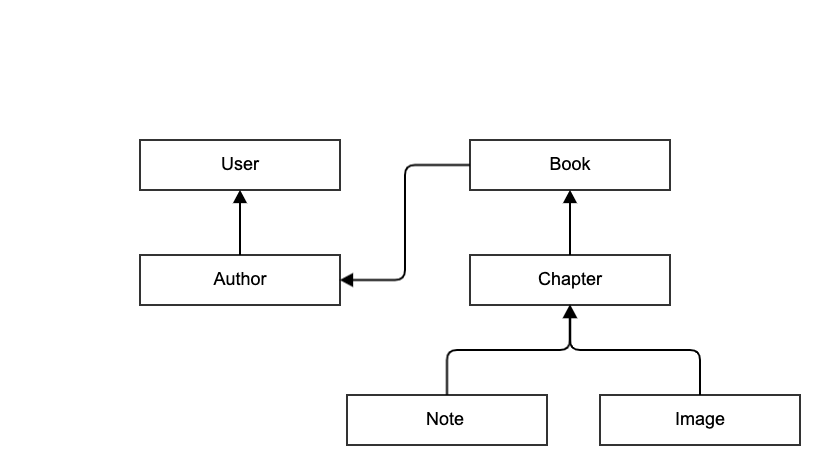
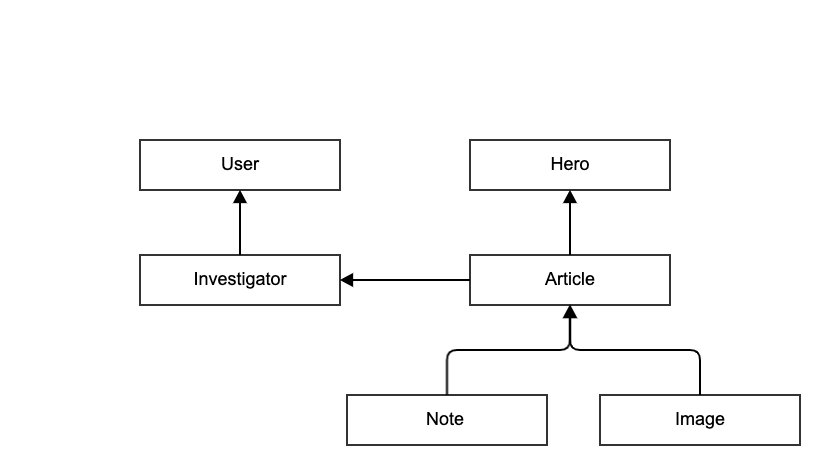

Lesson 36 - Data Versioning
LEARN
Office Hours
- If you need help please attend office hours
- MWF 1:30-2:30 by Zoom
- Zoom: https://unco.zoom.us/j/99180652183
- Email: mark.seaman@unco.edu
Today
- Data Design Graph
- Exporting Data
- Data Versioning Design Pattern
Views Design Patterns
- Simple Views
- Theme View
- Home View
- Card View
- Document View
- Complex Views
- Tabs View
- Accordion View
- Carousel View
- Super View
Catalog of Design Patterns
- Design Patterns
- Use this catalog of patterns as you work on projects
Data Design Graph
- Object relationships as an outline
- Draw a picture of your objects (if more than four)
Book Builder Data Design
User
Author
user*
photo*
name
Book
author*
title
doc_path
Chapter
book*
order
title
markdown
Note
author*
chapter*
title
text
Image
folder
image
title
Book Data Relationships
If you have more that four data models draw a simple diagram

Use https://www.gliffy.com/
Superhero Data Relationships

Use https://www.gliffy.com/
Data Versioning Design Pattern
- Why use this pattern
- When to use code cloning
- How to steps
- What to focus on
Why - Data Versioning
- Extract key information from database
- Use Git to track changes
- Review textual change periodically
- Restore objects with Import
- Automatic export nightly
When - Data Versioning
- Big picture can easily be captured in a table
- Import and export can be safely used
How - Data Versioning
- Export Design Pattern
- Commit data changes
- Object Record Creation
- Import Design Pattern
- Testability
What - Data Versioning
- Customizations
- Limitations
Export Design Pattern
- Decide on key table to export
- Create a CSV file and other files
```python class Chapter(models.Model): book = models.ForeignKey(Book, on_delete=models.CASCADE, editable=False) order = models.IntegerField() title = models.CharField(max_length=200) markdown = models.TextField() html = models.TextField() document = models.CharField(max_length=200)
def export_record(self):
return [self.order, self.title, self.document]
```
Commit data changes
- Create a periodic task
- Export data daily
- Commit to git
- Review changes being made
Object Record Creation
- Some fields create identity
- Other fields are set automatically
- Build a create function to create or update objects
```python class Chapter(models.Model): book = models.ForeignKey(Book, on_delete=models.CASCADE, editable=False) order = models.IntegerField() title = models.CharField(max_length=200) markdown = models.TextField() html = models.TextField() document = models.CharField(max_length=200)
@staticmethod
def create(book, order, title, document):
c = Chapter.objects.get_or_create(book=book, order=order)[0]
c.title = title
c.document = document
c.save()
return c
```
Import Design Pattern
- Open a CSV file and read the rows and columns
- Call create for each object record
```python class Chapter(models.Model): book = models.ForeignKey(Book, on_delete=models.CASCADE, editable=False) order = models.IntegerField() title = models.CharField(max_length=200) markdown = models.TextField() html = models.TextField() document = models.CharField(max_length=200)
@staticmethod
def import_record(book, values):
Chapter.create(book, values[0], values[1], values[2])
```
Testability
- Create a test to import live data
- Verify the records created
```python class BookDataTest(TestCase):
def test_import_books(self):
import_all_books()
# print(Author.objects.all())
# print(Book.objects.all())
# print(Chapter.objects.all())
self.assertEqual(len(Author.objects.all()), 3)
self.assertEqual(len(Book.objects.all()), 2)
self.assertEqual(len(Chapter.objects.all()), 70)
```
Create a Django Command
- Build a custom command to run the cloner
coder/management/commands/initdb.py
```python from django.core.management.base import BaseCommand
class Command(BaseCommand):
def handle(self, *args, **options):
print("IMPORT BOOKS")
create_test_user()
import_all_books()
def create_test_user(): args = dict(username='seaman', email='me@here.com', password='secret') user = get_user_model().objects.filter(username='seaman') if user: user = user[0] else: user = get_user_model().objects.create_user(**args) return user, args
def import_all_books(): author = create_author('Mark Seaman') import_book("The Leverage Principle", author, 'Documents/Leverage', "Software Engineering Skills") description = 'Mark shares his insights and irony about the absurdity of life.' import_book("From the Edge of Reality", author, 'Documents/Poems', "A Seaman's Poems", description) ```
Invoke the command script
bash
$ python manage.py initdb
BUILD
Practice
- Clone my repo and study the code in 'week13/BookBuilder'
- Read the Design Patterns
- Build the code and experiment with it